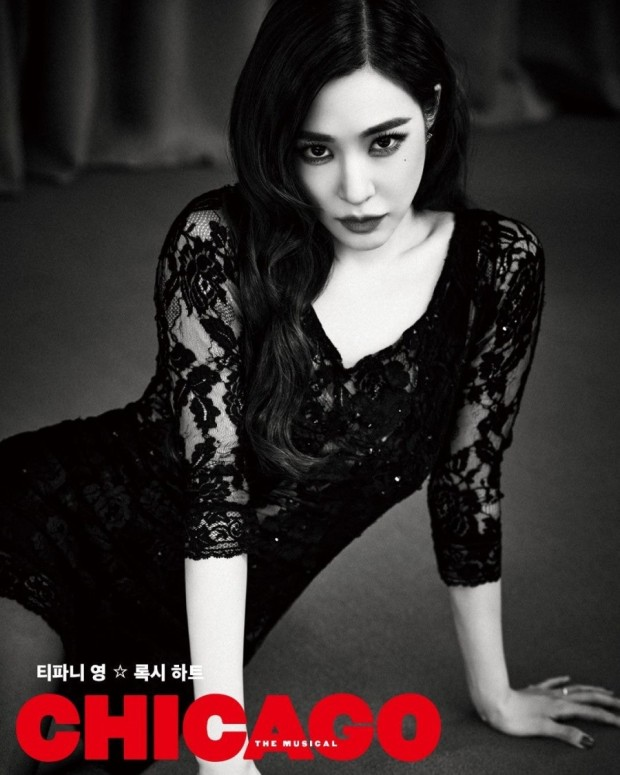

CHICAGO

등장인물

- 빌리 플린 (Billy Flynn)
- “Welcome! Ladies and gentleman. You are about to see a story of murder, greed, corruption, violence, exploitation, adultery and treachery─All those things we all hold near and dear to our hearts. Thank you."
- 본작의 남주인공. 시카고 제일의 변호사로 주색잡기를 좋아하면서도 원하는 수임료를 지불하지 않으면 가차없이 의뢰를 거절하는 속물 중의 속물. 이 때문에 자신의 몸으로 수임료를 메꾸려던 록시 하트의 계획은 씨알도 안 먹힌다. 대신 에이모스를 통해 록시의 물건을 경매로 내놓으면서 수임료를 지불하도록 한다. 속물이지만 이렇게 확실한 능력과 화려한 언변, 능숙한 언론플레이로 여성 재소자를 무죄방면 하는데 도가 튼 변호사. 이 바닥에서 석방 보증수표로 명성이 매우 자자한 인물이다. 다만 한 가지 문제점이라면 지나친 기분파이기 때문에 수임 료 계약이 파기되면 고의로 의뢰인을 패소 시키기도 한다는 점이다. 록시와 벨마를 이간질하면서도 결국엔 둘 다 무죄방면 시킨다. 록시 하트의 변호사 선임료에 대한 문제인데 일단 재판 과정 중에서는 에이모스 하트가 준비한 돈은 1차적으로 받고 남은 돈은 록시 하트가 2인조 공연에서 얻는 수익 중 일부를 로열티 형식으로 주기적으로 받는 것으로 합의했다. 
- 본작의 주인공. 화려한 재즈싱어를 꿈꿨지만 코러스걸만 전전하다 현재는 평범한 주부로 살고 있다. 자동차 정비공 에이모스 하트(Amos Hart) 와 결혼했지만 가구외판원 프레드 케이슬리(Fred Casely)와 내연 관계이다. 어느 날 프레드에게 일방적인 이별 통보를 받고 격분해 프레드를 총으로 살해하면서 쿡 카운티 교도소에 수감된다. 이후 시카고 최고의 인기 변호사 빌리 플린(Billy Flynn)에게 사건을 의뢰하고 언론플레이를 통해 온 세상의 스포트라이트를 받는다. 그동안 꿈꿔왔던 세간의 주목과 인기를 한 몸에 받으며 우여곡절 끝에 무죄 판결을 받는데 성공하지만, 그녀를 향했던 스포 트라이트는 언제 그랬냐는 듯 더 자극적인 다른 사건으로 쏠리면서 순식간 에 낙동강 오리알 신세가 된다. 자신이 꿈꾸던 모든 것이 얼마나 허무하고 덧 없는 것인지 뼈저리게 깨달은 록시는 일전에 벨마 켈리(Velma Kelly)가 제안 했던 2인극을 떠올리고, 결국 그녀와 의기투합해 화려한 2인조 공연을 선보이 며 스타가 된다.
록시 하트 (Roxie Hart)